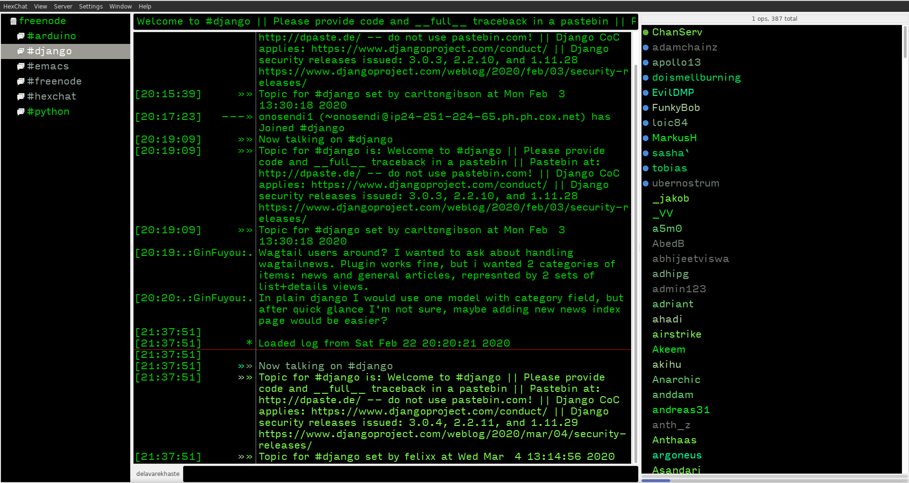

اتصال به freenode تحت شبکه تور
توی دنیای دیجیتال ممکنه خیلی ها نیاز به یه ارتباط حرفه ای تر با اشخاص خاصی که سراسر دنیا در یک حیطه عمل میکنن داشته باشن. من توی این پست قصد حرف زدن در رابطه با irc و بررسی اون و پروتکل های مختلف ندارم و قصدم فقط نحوه تنظیم یکی از کلاینت های اون به نام hexchat هست که با اون به صورت ناشناس و به کمک شبکه TOR به شبکه Freenode متصل بشیم و بتونیم با دیگران ارتباط برقرار کنیم و به انجام کارهای خودمون برسیم.
-
نصب ابزار های مورد نیاز:
نصب در توزیع دبیان یا توزیع های برپایه دبیان :
sudo apt install hexchat tor
(بنظرم نیاز نباشه بگم که اگر از توزیع متفاوتی استفاده میکنی باید موجودیت بسته ها رو با جست و جو توی مخازن مشخص کنی و بعد اون ها رو نصب کنید.
-
راه اندازی سرویس TOR :
سپس سرویس تور رو راه اندازی و فعال کنید:
sudo systemctl start tor
sudo systemctl enable tor
به کمک journal میتونید سرویس تور رو مانیتور کنید و از سلامت اون اطمینان پیدا کنید :
journalctl -xfu tor
که خروجی مانند تصویر زیر هست:
توجه کنید که باید اون Bootstrapped 100% رو ببینید و اگر چنین نبود نیاز به کانفیگ تور و استفاده از پل دارید که توی یه پست دیگه در این مورد توضیح میدم.
اگر خروجی لاگ تور مانند تصویر بالا بود میتونید از پروکسی تور با مشخصات زیر استفاده کنید :
-
ساخت certificate :
حالا وقت اینه که برای hexchat یه گواهی صادر کنیم :) با استفاده از دستورات زیر میتونید چنین کاری رو انجام بدید :
mkdir -p $HOME/.config/hexchat/certs
openssl req -x509 -new -newkey rsa:4096 -sha256 -days 1000 -nodes -out freenode.pem -keyout freenode.pem
mv freenode.pem $HOME/.config/hexchat/certs/
openssl x509 -in $HOME/.config/hexchat/certs/freenode.pem -outform der | sha1sum -b | cut -d' ' -f1
خروجی آخرین دستور امضای دیجیتالی(finger print) شما هست ؛ پس اون رو حتماً کپی کنید.
-
افزودن امضای دیجیتالی به حساب کاربری freenode :
بعد از این همه باید این امضای دیجیتالی رو به حساب کاربری خودتون توی freenode اضافه کنید(در مورد ساخت حساب کاربری توی freenode در یه پست دیگه توضیح خواهم داد). کافیه با استفاده از hexchat وارد شبکه freenode بشید و پسورد حساب کاربری خودتون رو به صورت زیر وارد کنید تا بتونید امضای دیجیتالی به اکانت خودتون اضافه کنید:
بعد از این که وارد حساب کاربری خودتون شدید کافیه اون امضای دیجیتال رو به صورت زیر به حساب کاربری خودتون اضافه کنید :
-
کانفیگ hexchat برای اتصال به سرور مختص شبکه تور freenode :
درون ابزار hexchat کلید های ctrl+s رو بفشارید تا لیست شبکه ها نمایان بشه ؛ freenode رو انتخاب کنید و کلید edit کنار لیست رو بفشارید تا وارد تنظیمات این شبکه بشید. در بخش سرورها freenodeok2gncmy.onion رو اضافه کنید و متود لاگین رو به SASL EXTERNAL(cert) تغییر بدید.
-
کانفیگ hexchat برای استفاده از شبکه تور :
وارد بخش Settings>Preferences بشید و در منو تنظیمات بخش Network setup رو انتخاب کنید و پروکسی تور رو مثل تصویر زیر اضافه کنید :

و در آخر هم ابزار hexchat رو ببندید و دوباره اجرا کنید و با یه آیپی cloak شده به کمک شبکه تور به freenode متصل بشید!